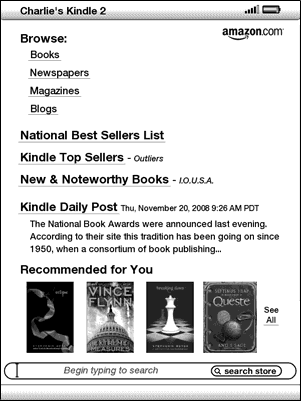
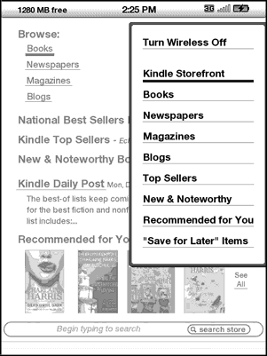
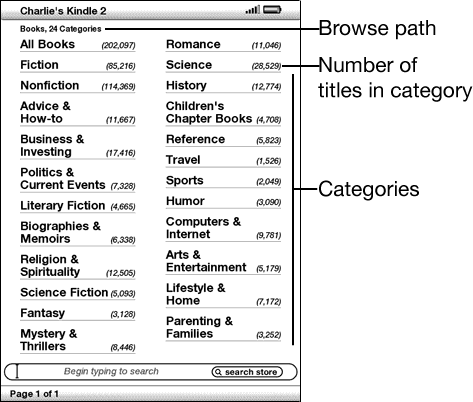
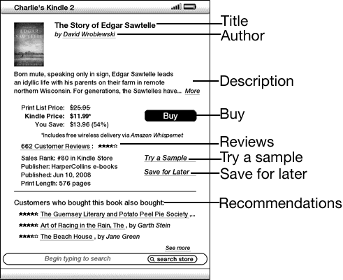
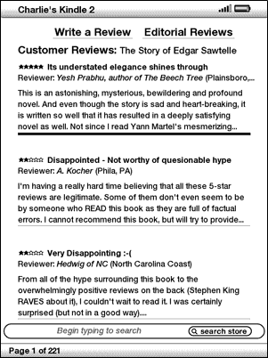
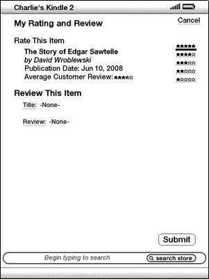

The Kindle Store is the place to purchase your Kindle books, newspapers, magazines, and blogs. Find an item in the store, select "Buy," and you will typically receive your item wirelessly in under a minute. All of your Kindle purchases use Amazon 1-Click for easy purchasing and Amazon automatically backs up all of your purchases in case you lose your Kindle or want to download a title again. To help other Amazon users decide what to buy, you can also add your own ratings and reviews.
This section tells you how to connect to the Kindle Store on your Kindle, and provides some ideas about the best ways to look for content once you are connected.
You connect to the Kindle Store using your device's built-in Whispernet service. To go to the Kindle Store, follow these steps:
You will see this icon in the upper left corner of the page, if you are not already connected. The Kindle Storefront will appear as shown later in this chapter and serves as a launch point for all of the Kindle Store services.
This section describes the different pages you will find at the Kindle Store, like the Kindle Storefront, the Browse pages, and the product detail pages for individual pieces of content.
When you select "Shop in Kindle Store" from any menu, you will be taken to the Kindle Storefront. An example is shown below, the storefront you see may be different as we update it often. The features are explained in the list that follows.

Browse the Kindle Store - displays the currently available content by type in the Kindle Store.
National Best Sellers List - displays a list of current best sellers in the Kindle Store from the New York Times, USA Today and Wall Street Journal.
Kindle Top Sellers - displays a list of Kindle bestselling titles.
New & Noteworthy Books - displays a list of new or noteworthy books on the Kindle Store.
Kindle Daily Post - displays a daily blog from Amazon on content-related topics.
Recommended for You - displays items recommended for you by Amazon based on your previous digital and physical purchases.
Search Store - enter your search criteria here and Amazon will search the entire Kindle Store for matches and return the search results.
Once you are in the Kindle Store, you can move around using links on the pages of the store such as Reviews or Top Sellers, by using the Store menu, or by searching the Kindle Store for specific titles.
The menu you see while you are connected to the Kindle Store allows you to go to other places in the store easily and includes the selections listed below.

Turn Wireless Off - turns the Whispernet connection off. If you turn wireless off, you will not be able to access the Kindle Store.
Kindle Storefront - takes you to the Kindle Storefront.
Books - displays the books currently available in the Kindle Store.
Newspapers - displays the newspapers currently available in the Kindle Store.
Magazines - displays the magazines currently available in the Kindle Store.
Blogs - displays the blogs currently available in the Kindle Store.
Top Sellers - displays a list of Amazon best sellers.
New & Noteworthy - displays a list of new or noteworthy content on the Kindle Store.
Recommended for You - displays items recommended for you by Amazon based on your previous digital and physical purchases.
"Save For Later" Items - displays items you have previously noted as something that might be of interest to you.
Another way to find reading material in the Kindle Store is to browse through the different content categories such as books or newspapers. Once inside a category, you can further refine your browse by topic. For example, within "Books," you can refine listings to "Fiction," "Nonfiction," "Advice & How-to," etc. Each browse page shows the path that you have taken at the top so you can easily retrace your steps.
The example below shows you the type of listings you will see on the Books browse page.

Browse path - shows the steps on the path you used to get to the current page.
Number of titles in the category - shows the number of items available in the particular category.
Categories - groups the content by topics of interest to make browsing easier. Select the category you are interested in to show only items in that particular subject.
The product detail page for books and periodicals provides the most pertinent information about an item. To get to the product detail page for a particular item, use the 5-way controller to select it.
The example below shows you a product detail page for a book available at the Kindle Store. The features on this page are explained in the list below.

Author - searches the Kindle Store for other books by the author when selected. If more than one author wrote the book, selecting this item will show a menu of the authors from which to choose.
Description - describes the item. Select "more" to see the full text.
Buy - purchases the item using your default Amazon 1-Click payment method and sends it wirelessly to your Kindle for free.
Reviews - displays the customer reviews for this item. Provides links to editorial reviews and for writing your own review.
Try a Sample - downloads the beginning of the book for free so you can sample it before buying.
Save for Later - adds the item to your "Save for Later Items" list so you can peruse or purchase it later.
Customers who bought this book also bought: - displays a list of items purchased by Amazon customers who also bought this item.
The product detail page for newspapers, magazines, and blogs is similar to the product detail page for books, but it contains different purchasing options:
Subscribe now with 14-day Free Trial - select this to start your subscription. All newspapers, magazines, and blogs come with a free trial to start your subscription, and you can cancel your subscription on the Manage Your Kindle page on Amazon at any time during this period. After the trial period, your subscription will automatically be delivered at the regular monthly price.
Buy Current Issue - purchases the current issue of the newspaper or magazine and sends it to your Kindle.
The Kindle Store provides a "Save for Later Items" page for you to save items that you want to look at or purchase later. This page lists the item's title, author, and average customer rating.
To add an item to your list, select "Save for Later" from the product detail page for the item. You will see a confirmation message that your addition was successful. To see your list of saved items, select "Save for Later Items" from the Store menu. To display the product detail page for this item, select "Details." To remove the item from your list, select "Delete."
The Kindle Store provides several features to help you decide which reading materials you may want to purchase. This section describes the various ways you can find what is available.
The Recommendations page provides a list of things that you might enjoy based on the types of materials (digital and printed) you have purchased in the past either on Kindle or on Amazon.com. To get to this page, select "Recommended for You" from the Kindle Storefront or from the Kindle Store menu.
The Reviews page lists Customer Reviews for items. To get to the Reviews page for a specific item, select "Reviews" from the product detail page for that item.
To see Editorial Reviews from publications, select "Editorial Reviews" from the Reviews page. For the complete text of a particular review, select the review excerpt using the 5-way controller.

You can share your opinions with other readers by rating and reviewing the materials that you have read. To get to this page, select "Customer Reviews" from the product detail page for the item you want to critique, and then select "Write a Review."
The sample screen below shows you the type of information you can enter.

This section explains various aspects of purchasing items from the Kindle Store.
Most Kindle books allow you to download a sample before you decide to buy the item. The end of the sample book has a link to revisit the product detail page for the item or a link to purchase the item directly. In addition, while reading a sample, the Menu shows "Buy this Book Now" so you can purchase the sample at any time during your reading.
All of your Kindle Store purchases use Amazon 1-Click, which allows you to purchase reading materials with a single selection. To make your purchase, select "Buy" from any product detail page for the item you want. Your item will be auto-delivered wirelessly to your Kindle and also added to the Manage Your Kindle page on Amazon.com. You will see an "items downloaded" message at the top of the screen when your item has arrived on your Kindle.
Tip: Once your item has been downloaded, the original is retained in the Manage Your Kindle page on Amazon.com. If the download is not successful, or if it is interrupted, Kindle will attempt to download again without any action required from you.
All of your Kindle Store purchases present an order cancellation feature at the time of purchase in case you change your mind or made a mistake. Just select "Purchase by Accident? Cancel this Order" on the order confirmation page. If you prefer, you can also contact Kindle Support using Amazon's Click-to-Call service on the Web at:
http://www.amazon.com/kindlesupport